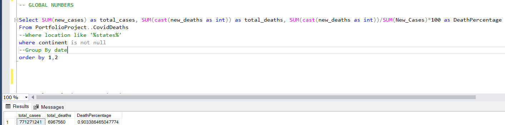

Introduction:
This SQL project focuses on exploring and analyzing COVID-19 data to derive valuable insights. The dataset includes information on COVID-19 deaths and vaccinations, and the project employs various SQL techniques such as Joins, Common Table Expressions (CTEs), Temporary Tables, Window Functions, Aggregate Functions, and the creation of Views. The skills used in this exploration encompass a range of SQL functionalities, including converting data types.
Goal:
As an aspiring data analyst skilled in SQL, I embarked on a comprehensive exploration of COVID-19 data. This blog details my journey, showcasing advanced SQL techniques applied to understand the global impact of the pandemic.
Outcome:
Through meticulous SQL queries, this project sheds light on critical aspects of the pandemic, such as infection rates, death counts, and vaccination progress.
1. Global Impact:
The total number of COVID-19 cases worldwide has reached a staggering 771,271,241, with a corresponding total death toll of 6,967,560, reflecting a global death percentage of 0.90%.
2. Continental Insights:
North America: The continent with the highest death count, reaching 1,127,152 fatalities.
South America: A significant impact, marked by 704,659 total deaths.
Asia: A considerable toll, with 532,034 lives lost.
Europe: Experiencing a substantial impact, with 400,077 total deaths.
Africa: A comparatively lower total death count of 102,595.
Oceania: Demonstrating resilience with a total death count of 23,188.
3. Countries with High Death Count per Population:
United States: Leading in death count with 1,127,152, emphasizing the severity of the pandemic's impact.
Brazil: Significant impact, ranking second with 704,659 total deaths.
India: Reflecting the global scale of the pandemic, with 532,034 total deaths.
Russia: A substantial toll, reaching 400,077 total deaths.
Mexico: Demonstrating a significant impact with 334,669 total deaths.
4. Countries with High Infection Rate compared to Population:
Cyprus: Remarkably high infection rate at 73.76% of the population.
San Marino: A substantial impact, with 73.30% of the population infected.
Brunei: Notable impact, with 69.40% of the population affected.
Austria: A high infection rate of 68.03% of the population.
South Korea: Demonstrating significant vulnerability, with 66.72% of the population infected.
This data exploration project serves as a testament to my analytical prowess, showcasing how SQL can uncover critical insights into the multifaceted impact of COVID-19 on a global scale.
For more details and the source code, you can check out the project on GitHub: